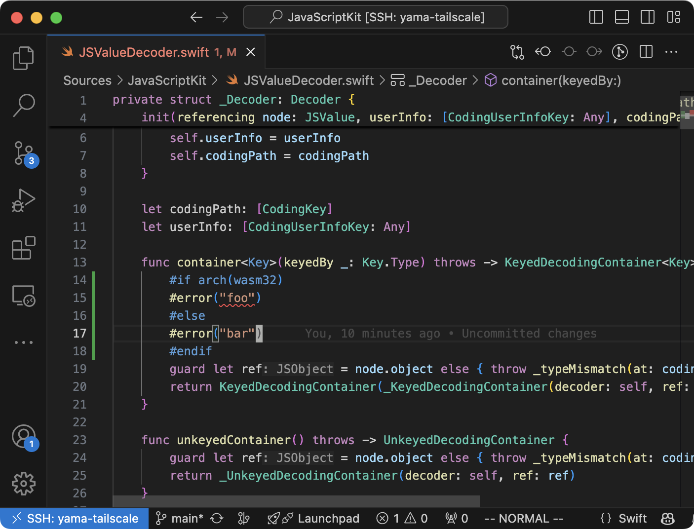
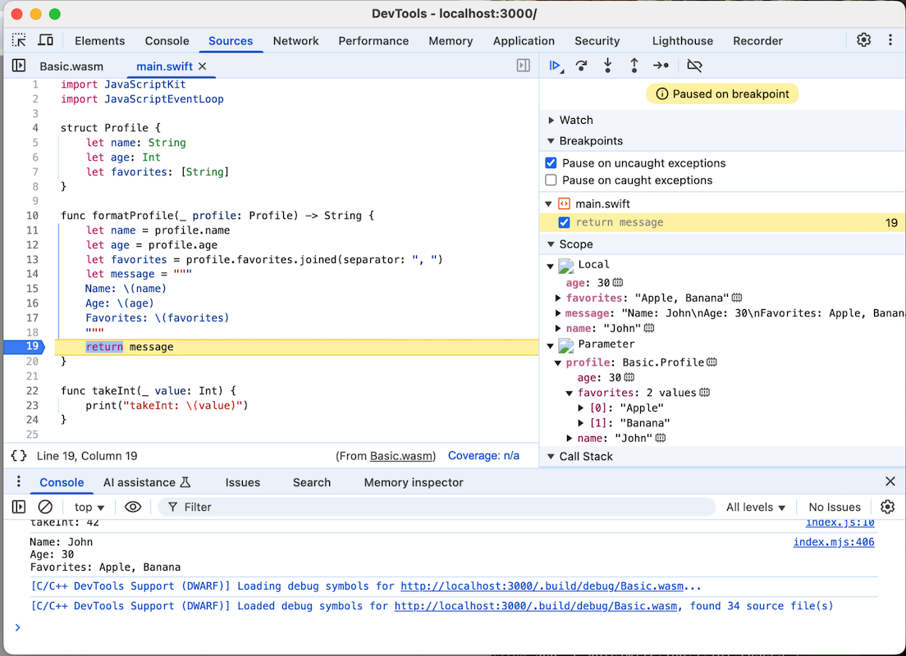

Introduction
Welcome to the SwiftWasm Documentation!
SwiftWasm is an open source project to support the WebAssembly target for Swift.
The goal of this project is to fully support the WebAssembly target for Swift and to be merged into the upstream repository.
WebAssembly is described on its home page as:
WebAssembly (abbreviated as Wasm) is a binary instruction format for a stack-based virtual machine. Wasm is designed as a portable compilation target for programming languages, enabling deployment on the web for client and server applications.
We use LLVM as a compiler backend to produce WebAssembly binaries. Our resulting binaries also depend on WASI, which is a modular system interface for WebAssembly. WASI is mainly required to compile Swift Standard Library.
Important note
In 2024, Apple introduced Swift Embedded. While both projects benefit from each other, it is important to understand that they are different targets at the build phase, consequentially with different sets of abilities. Embedded Swift very limited but can produce small binaries. Example.
Project Status
The remaining works are:
- Integrating the build system with the official Swift CI.
Getting Started
This is a getting started guide section to use SwiftWasm.
You can learn about:
- How to set up a Swift toolchain for compiling to WebAssembly
- How to compile a simple Swift code and Swift Package into WebAssembly
- How to interoperate with JavaScript
Installation - Latest Release (Swift 6.0.3)
SwiftWasm provides Swift SDKs for WebAssembly.
Before installing the Swift SDK, you need to ensure the following:
- You need to install an Open Source toolchain from swift.org. (Not the Xcode toolchain)
- You cannot use toolchains bundled with Xcode to use the Swift SDK.
- If you are using macOS, please follow the official guide to install the toolchain.
Please ensure you have installed the Swift 6.0.3 Open Source toolchain.
swift --version
| Toolchain | Output |
|---|---|
| ❌ Xcode | Apple Swift version 6.0.3 (swiftlang-6.0.3.1.10 clang-1600.0.30.1) |
| ✅ Open Source (macOS) | Apple Swift version 6.0.3 (swift-6.0.3-RELEASE) |
| ✅ Open Source (Others) | Swift version 6.0.3 (swift-6.0.3-RELEASE) |
Once you have installed the Open Source toolchain, you can install the Swift SDK for WebAssembly:
swift sdk install "https://github.com/swiftwasm/swift/releases/download/swift-wasm-6.0.3-RELEASE/swift-wasm-6.0.3-RELEASE-wasm32-unknown-wasi.artifactbundle.zip" --checksum "31d3585b06dd92de390bacc18527801480163188cd7473f492956b5e213a8618"
After installing the Swift SDK, you can see 6.0.3-RELEASE-wasm32-unknown-wasi in the Swift SDK list:
swift sdk list
You can also find other SDKs from the GitHub Releases page.
Hello, World
First, create a new directory for your project and navigate into it:
$ mkdir hello && cd hello
Create a new Swift package:
$ swift package init --type executable
You can use the installed SDKs to cross-compile Swift packages for WebAssembly:
$ swift build --swift-sdk wasm32-unknown-wasi
...
$ file .build/wasm32-unknown-wasi/debug/hello.wasm
.build/wasm32-unknown-wasi/debug/hello.wasm: WebAssembly (wasm) binary module version 0x1 (MVP)
You can run the built WebAssembly module using wasmtime:
$ wasmtime .build/wasm32-unknown-wasi/debug/hello.wasm
Hello, world!
FAQ
How to check if I am using Open Source toolchain or Xcode toolchain?
$ swift --version | head -n1
| Toolchain | Output |
|---|---|
| Xcode | Apple Swift version 6.0.3 (swiftlang-6.0.3.1.10 clang-1600.0.30.1) |
| Open Source (macOS) | Apple Swift version 6.0.3 (swift-6.0.3-RELEASE) |
| Open Source (Others) | Swift version 6.0.3 (swift-6.0.3-RELEASE) |
<unknown>:0: error: module compiled with Swift 6.0.3 cannot be imported by the Swift x.y.z
This error occurs when the Swift toolchain version you are using is different from the version of the Swift SDK you have installed.
To resolve this issue, you can either:
- Switch the Swift toolchain to the same version as the Swift SDK you have installed. Check the official guide for how to switch the toolchain.
- Install the Swift SDK for the same version as the Swift toolchain you are using. Use the following shell snippet to query compatible Swift SDK for your current toolchain version:
(
V="$(swiftc --version | head -n1)"; \
TAG="$(curl -sL "https://raw.githubusercontent.com/swiftwasm/swift-sdk-index/refs/heads/main/v1/tag-by-version.json" | jq -r --arg v "$V" '.[$v] | .[-1]')"; \
curl -sL "https://raw.githubusercontent.com/swiftwasm/swift-sdk-index/refs/heads/main/v1/builds/$TAG.json" | \
jq -r '.["swift-sdks"]["wasm32-unknown-wasi"] | "swift sdk install \"\(.url)\" --checksum \"\(.checksum)\""'
)
What is the difference between the Swift Toolchain and the Swift SDK?
The Swift toolchain is a complete package that includes the Swift compiler, standard library, and other tools.
The Swift SDK includes a subset of the Swift toolchain that includes only the necessary components for cross-compilation and some supplementary resources.
What is included in the Swift SDK for WebAssembly?
The Swift SDK for WebAssembly includes only the pre-built Swift standard libraries for WebAssembly. It does not include the Swift compiler or other tools that are part of the Swift toolchain.
Porting code to WebAssembly with WASI
In the form that's currently standardized and supported by browsers and other hosts, WebAssembly
is a 32-bit architecture. You have to take this into account when porting code from other
platforms, since Int type is a signed 32-bit integer, and UInt is an unsigned 32-bit integer
when building with SwiftWasm. You'll need to audit codepaths that cast 64-bit integers to Int
or UInt, and a good amount of cross-platform test coverage can help with that.
Additionally, there a differences in APIs exposed by the standard C library and Swift core libraries which we discuss in the next few subsections.
WASILibc module
When porting existing projects from other platforms to SwiftWasm you might stumble upon code that
relies on importing a platform-specific C
library module directly. It looks like import Glibc on Linux, or import Darwin on Apple platforms. Fortunately, most of the standard C library
APIs are available when using SwiftWasm, you just need to use import WASILibc to get access to it.
Most probably you want to preserve compatibility with other platforms, thus your imports would look
like this:
#if canImport(Darwin)
import Darwin
#elseif canImport(Glibc)
import Glibc
#elseif canImport(WASILibc)
import WASILibc
#endif
Limitations
WebAssembly and WASI provide a constrained environment, which currently does
not directly support multi-threading. Thus, you should not
expect these APIs to work when importing WASILibc. Please be aware of these limitations when
porting your code, which also has an impact on what can be supported in the Swift
Foundation at the moment.
Swift Foundation and Dispatch
The Foundation core library is available in SwiftWasm, but in a limited capacity. The main reason is that the Dispatch core library is unavailable due to the lack of standardized multi-threading support in WebAssembly and SwiftWasm itself. Many Foundation APIs rely on the presence of Dispatch under the hood, specifically threading helpers. A few other types are unavailable in browsers or aren't standardized in WASI hosts, such as support for sockets and low-level networking, and they had to be disabled. These types are therefore absent in SwiftWasm Foundation:
| Type or module | Status |
|---|---|
FoundationNetworking | ❌ Unavailable |
FileManager | ✅ Available after 6.0 |
Host | ✅ Partially available after 6.0 |
Notification | ✅ Available after 6.0 |
NotificationQueue | ❌ Unavailable |
NSKeyedArchiver | ✅ Available after 6.0 |
NSKeyedArchiverHelpers | ✅ Available after 6.0 |
NSKeyedCoderOldStyleArray | ✅ Available after 6.0 |
NSKeyedUnarchiver | ✅ Available after 6.0 |
NSNotification | ✅ Available after 6.0 |
NSSpecialValue | ✅ Available after 6.0 |
Port | ✅ Available after 6.0 |
PortMessage | ✅ Available after 6.0 |
Process | ❌ Unavailable |
ProcessInfo | ✅ Partially available after 5.7 |
PropertyListEncoder | ✅ Available after 6.0 |
RunLoop | ❌ Unavailable |
Stream | ✅ Partially available after 6.0 |
SocketPort | ❌ Unavailable |
Thread | ❌ Unavailable |
Timer | ❌ Unavailable |
UserDefaults | ✅ Available after 6.0 |
Related functions and properties on other types are also absent or disabled. We would like to make them available in the future as soon as possible, and we invite you to contribute and help us in achieving this goal!
XCTest
The swift-corelibs-xctest project is available in WebAssembly platforms, and you can use it to write tests for your SwiftWasm projects.
The following XCTest features are unavailable in SwiftWasm:
| API | Status |
|---|---|
XCTestExpectation | ❌ Unavailable |
XCTNSPredicateExpectation | ❌ Unavailable |
XCTNSNotificationExpectation | ❌ Unavailable |
XCTWaiter | ❌ Unavailable |
XCTest.perform | ❌ Unavailable |
XCTest.run | ❌ Unavailable |
Creating a Browser App
Currently, the Tokamak UI framework is one of the easiest ways to build a browser app with SwiftWasm. It tries to be compatible with the SwiftUI API as much as possible, which potentially allows you to share most if not all code between SwiftWasm and other platforms.
Requirements
Tokamak relies on the carton development tool for development and testing.
While you can build Tokamak apps without carton, that would require a lot of manual steps that are
already automated with carton.
System Requirements
Important: Tokamak UI currently is not compatible with swift 6.0+.
Installation
- Create a directory for your project and make it current:
mkdir MyApp && cd MyApp
- Initialize the project:
swift package init --type executable
- Add Tokamak and carton as dependencies to your
Package.swift:
// swift-tools-version:5.8
import PackageDescription
let package = Package(
name: "MyApp",
platforms: [.macOS(.v11), .iOS(.v13)],
dependencies: [
.package(url: "https://github.com/TokamakUI/Tokamak", from: "0.11.0"),
.package(url: "https://github.com/swiftwasm/carton", from: "1.0.0"),
],
targets: [
.executableTarget(
name: "MyApp",
dependencies: [
.product(name: "TokamakShim", package: "Tokamak")
]),
]
)
- Add your first view to
Sources/MyApp/main.swift:
import TokamakDOM
@main
struct TokamakApp: App {
var body: some Scene {
WindowGroup("Tokamak App") {
ContentView()
}
}
}
struct ContentView: View {
var body: some View {
Text("Hello, world!")
}
}
- Build the project and start the development server,
swift run carton devcan be kept running during development:
swift run carton dev
- Open http://127.0.0.1:8080/ in your browser to see the app
running. You can edit the app source code in your favorite editor and save it,
cartonwill immediately rebuild the app and reload all browser tabs that have the app open.
You can also clone the Tokamak repository and run carton dev --product TokamakDemo in its root directory. This will build the demo app that shows almost all of the currently
implemented APIs.
JavaScript interoperation
JavaScriptKit is a Swift framework to interact with JavaScript through WebAssembly.
You can use any JavaScript API from Swift with this library. Here's a quick example of JavaScriptKit usage in a browser app:
import JavaScriptKit
let document = JSObject.global.document
var divElement = document.createElement("div")
divElement.innerText = "Hello, world"
_ = document.body.appendChild(divElement)
You can also use JavaScriptKit in SwiftWasm apps integrated with Node.js, as there no assumptions that any browser API is present in the library.
JavaScriptKit consists of a runtime library package hosted on npm, and a SwiftPM package for the API on the Swift side. To integrate the JavaScript runtime automatically into your app, we recommend following the corresponding guide for browser apps in our book.
You can get more detailed JavaScriptKit documentation here.
Running async functions in WebAssembly
On macOS, iOS, and Linux, libdispatch-based executor is used by default, but libdispatch is not supported in single-threaded WebAssembly environment.
However, there are still two global task executors available in SwiftWasm.
If you need multi-threading support on Web, please see Multithreading guide for more details.
Cooperative Task Executor
Cooperative Task Executor is the default task executor in SwiftWasm. It is a simple single-threaded cooperative task executor implemented in Swift Concurrency library.
If you are not familiar with "Cooperative" in concurrent programming term, see its definition for more details.
This executor has an event loop that dispatches tasks until no more tasks are enqueued, and exits immediately after all tasks are dispatched. Note that this executor won't yield control to the host environment during execution, so any host's async operation cannot call back to the Wasm execution.
This executor is suitable for WASI command line tools, or host-independent standalone applications.
// USAGE
// $ swiftc -target wasm32-unknown-wasi -parse-as-library main.swift -o main.wasm
// $ wasmtime main.wasm
@main
struct Main {
static func main() async throws {
print("Sleeping for 1 second... 😴")
try await Task.sleep(nanoseconds: 1_000_000_000)
print("Wake up! 😁")
}
}
JavaScript Event Loop-based Task Executor
JavaScript Event Loop-based Task Executor is a task executor that cooperates with the JavaScript's event loop. It is provided by JavaScriptKit, and you need to activate it explicitly by calling a predefined JavaScriptEventLoop.installGlobalExecutor() function (see below for more details).
This executor also has its own event loop that dispatches tasks until no more tasks are enqueued synchronously. It yields control to the JavaScript side after all pending tasks are dispatched, so JavaScript program can call back to the executed Wasm module. After a task is resumed by callbacks from JavaScript, the executor starts its event loop again in the next microtask tick.
To enable this executor, you need to use JavaScriptEventLoop module, which is provided as a part of JavaScriptKit package.
- Ensure that you added
JavaScriptKitdependency to yourPackage.swift - Add
JavaScriptEventLoopdependency to your targets that use this executor
.product(name: "JavaScriptEventLoop", package: "JavaScriptKit"),
- Import
JavaScriptEventLoopand callJavaScriptEventLoop.installGlobalExecutor()before spawning any tasks to activate the executor instead of the default cooperative executor.
Note that this executor is only available on JavaScript host environment.
See also JavaScriptKit package README for more details.
import JavaScriptEventLoop
import JavaScriptKit
JavaScriptEventLoop.installGlobalExecutor()
let document = JSObject.global.document
var asyncButtonElement = document.createElement("button")
_ = document.body.appendChild(asyncButtonElement)
asyncButtonElement.innerText = "Fetch Zen"
func printZen() async throws {
let fetch = JSObject.global.fetch.function!
let response = try await JSPromise(fetch("https://api.github.com/zen").object!)!.value
let text = try await JSPromise(response.text().object!)!.value
print(text)
}
asyncButtonElement.onclick = .object(JSClosure { _ in
Task {
do {
try await printZen()
} catch {
print(error)
}
}
return .undefined
})
Using threads in WebAssembly
Background
While the WebAssembly spec defines atomic operations, it does not define a way to create threads. This means that WebAssembly modules can't create threads themselves, and the host environment must provide a way to create threads and run WebAssembly modules on them.
wasi-threads proposal
The WebAssembly System Interface (WASI) had a proposal for adding thread creation APIs to WASI.
The proposal was implemented in several WASI host runtimes, including Wasmtime and wasm-micro-runtime,
but it was withdrawn in August 2023 in favor of shared-everything-threads proposal. However, the shared-everything-threads proposal is still in the early stages of development and is not yet available in any WASI host runtime. So, for now, we are employing the wasi-threads ABI in SwiftWasm to provide thread support immediately.
The wasi-threads feature is only available in the wasm32-unknown-wasip1-threads target triple, which is explicitly distinct from the wasm32-unknown-wasi target triple.
The wasm32-unknown-wasip1-threads target triple is only available in the nightly Swift SDK for WebAssembly.
You can run WebAssembly programs built with the wasm32-unknown-wasip1-threads target by using the wasmtime runtime with the --wasi threads flag.
Check a recent nightly Swift SDK release and how to install it here.
# Assume you are using swift-DEVELOPMENT-SNAPSHOT-2024-12-04-a toolchain
$ swift sdk install https://github.com/swiftwasm/swift/releases/download/swift-wasm-DEVELOPMENT-SNAPSHOT-2024-12-05-a/swift-wasm-DEVELOPMENT-SNAPSHOT-2024-12-05-a-wasm32-unknown-wasip1-threads.artifactbundle.zip --checksum 1796ae86f3c90b45d06ee29bb124577aa4135585bbd922430b6d1786f855697d
$ swift build --swift-sdk wasm32-unknown-wasip1-threads
# Enable the `wasi-threads` feature in wasmtime
$ wasmtime --wasi threads .build/debug/Example.wasm
Note that even with the wasi-threads feature, the default concurrency execution model is still single-threaded as we have not yet ported libdispatch. The wasi-threads feature is only used to provide a low-level pthread API for creating threads.
WebWorkerTaskExecutor - shared-everything concurrency
We provide WebWorkerTaskExecutor, a TaskExecutor implementation that runs Tasks in a Web Worker. This allows you to run Swift code concurrently in a Web Worker sharing the same memory space.
This feature is available in the JavaScriptKit package and you need to use wasm32-unkonwn-wasip1-threads target and SharedArrayBuffer to use it.
See more details in the following links:
- Add
WebWorkerTaskExecutor· Pull Request #256 · swiftwasm/JavaScriptKit - JavaScriptKit/Examples/Multithreading at main · swiftwasm/JavaScriptKit
- WebWorkerTaskExecutor | Documentation
WebWorkerKit - shared-nothing concurrency
If you can't use SharedArrayBuffer or want to run Swift code in a separate memory space, you can use WebWorkerKit. WebWorkerKit is a library that provides a way to run Swift Distributed Actors in their own worker "thread" in a Web Worker. It's message-passing based and allows you to run Swift code concurrently in a Web Worker without sharing memory space.
Check the repository for more details: swiftwasm/WebWorkerKit: A way of running Swift Distributed Actors in their own worker "thread"
Testing your app
You can write a test suite for your SwiftWasm app or library, or run an existing test suite
written for XCTest if you port existing code to SwiftWasm. Your project has to have a
Package.swift package manifest for this to work. We assume that you use SwiftPM to build your
project and that you have a working package manifest. Please follow our SwiftPM guide for new projects.
A simple test case
Let's assume you have an Example target in your project that you'd like to test. Your
Package.swift should also have a test suite target with a dependency on the library target. It
would probably look like this:
// swift-tools-version: 5.9
import PackageDescription
let package = Package(
name: "Example",
products: [
.library(name: "Example", targets: ["Example"]),
],
targets: [
.target(name: "Example"),
.testTarget(name: "ExampleTests", dependencies: ["Example"]),
]
)
Now you should make sure there's Tests/ExampleTests subdirectory in your project.
If you don't have any files in it yet, create ExampleTests.swift in it:
import Example
import XCTest
final class ExampleTests: XCTestCase {
func testTrivial() {
XCTAssertEqual(text, "Hello, world")
}
}
This code assumes that your Example defines some text with "Hello, world" value
for this test to pass. Your test functions should all start with test, please see XCTest
documentation
for more details.
Building and running the test suite with SwiftPM
You can build your test suite by running this command in your terminal:
$ swift build --build-tests --triple wasm32-unknown-wasi
If you're used to running swift test to run test suites for other Swift platforms, we have to
warn you that this won't work. swift test doesn't know what WebAssembly environment you'd like to
use to run your tests. Because of this building tests and running them are two separate steps when
using SwiftPM. After your tests are built, you can use a WASI-compatible host such as
wasmtime to run the test bundle:
$ wasmtime --dir . .build/wasm32-unknown-wasi/debug/ExamplePackageTests.wasm
(--dir . is used to allow XCTest to find Bundle.main resources placed alongside the executable file.)
As you can see, the produced test binary starts with the name of your package followed by
PackageTests.wasm. It is located in the .build/debug subdirectory, or in the .build/release
subdirectory when you build in release mode.
Code coverage with SwiftPM
Note: Code coverage support is available only in nightly toolchains for now.
You can also generate code coverage reports for your test suite. To do this, you need to build your
test suite with the --enable-code-coverage and linker options -Xlinker -lwasi-emulated-getpid:
$ swift build --build-tests --swift-sdk wasm32-unknown-wasi --enable-code-coverage -Xlinker -lwasi-emulated-getpid
After building your test suite, you can run it with wasmtime as described above. The raw coverage
data will be stored in default.profraw file in the current directory. You can use the llvm-profdata
and llvm-cov tools to generate a human-readable report:
$ wasmtime --dir . .build/wasm32-unknown-wasi/debug/ExamplePackageTests.wasm
$ llvm-profdata merge default.profraw -o default.profdata
$ llvm-cov show .build/wasm32-unknown-wasi/debug/ExamplePackageTests.wasm -instr-profile=default.profdata
# or generate an HTML report
$ llvm-cov show .build/wasm32-unknown-wasi/debug/ExamplePackageTests.wasm -instr-profile=default.profdata --format=html -o coverage
$ open coverage/index.html
Building and running the test suite with carton
If you use carton to develop and build your app, as described in our guide
for browser apps, just run swift run carton test in the
root directory of your package. This will automatically build the test suite and run it with a WASI runtime for you.
Configuring Visual Studio Code with WebAssembly SDK
This guide will help you configure Visual Studio Code (VSCode) to use the Swift SDK for WebAssembly.
Note: This guide assumes you have already installed the Swift SDK for WebAssembly from the development snapshot release.
Prerequisites
- Visual Studio Code
- Swift for Visual Studio Code
- Swift Development Snapshot (
swift-DEVELOPMENT-SNAPSHOT-2024-09-04-aor later) - Swift SDK for WebAssembly
Configure your SwiftPM package
- Open your Swift package in VSCode.
- Create a
.vscode/settings.jsonwith the following content:
{
"swift.path": "<path-to-swift-toolchain-from-swift.org>/usr/bin",
}
Note: Replace
<path-to-swift-toolchain-from-swift.org>with the path to the development snapshot Swift toolchain you downloaded from swift.org/install.
- Create a
.sourcekit-lsp/config.jsonwith the following content:
{
"swiftPM": {
"swiftSDK": "<Swift SDK id>"
}
}
Note: Replace
<Swift SDK id>with the Swift SDK id you installed using theswift sdk installcommand. You can find the installed SDK id by runningswift sdk list.
- Reload the VSCode window by pressing
Cmd + Shift + Pand selectingReload Window.
That's it! You can now build and auto-complete your Swift package using the Swift SDK for WebAssembly.

Debugging
Debugging is one of the most important parts of application development. This section describes debugging tools compatible with SwiftWasm.
These tools are DWARF-based, so you need to build your application with DWARF sections enabled.
If you are using carton bundle, you can use the --debug-info flag to enable debugging with optimized application.
If you are using swift build, it is enabled by default.
Chrome DevTools
When you are debugging a web browser application, Chrome DevTools is a good tool to use. It allows you to put breakpoints and step through at Swift source code level.
Official DWARF Extension
Please follow the steps below to configure Chrome DevTools for SwiftWasm:
- Install
C/C++ DevTools Support (DWARF)extension in your Chrome - Enable
WebAssembly Debugging: Enable DWARF supportinExperimentspane of DevTools settings
See the DevTools team's official introduction for more details about the extension.

Note that the function names in the stack trace are mangled. You can demangle them using swift demangle command.
Unfortunately, variable inspection is unavailable since Swift depends on its own mechanisms to do that instead of DWARF's structure type feature. If you need this feature, you can use the enhanced extension below.
Enhanced DWARF Extension for Swift
For a better Swift debugging experience, there's also an enhanced version of the DWARF extension specifically for Swift. This extension enables:
- Breakpoint setting and Swift code inspection
- Human-readable call stack frames
- Swift variable value inspection
To install this enhanced extension:
- First, uninstall the official "C/C++ DevTools Support (DWARF)" extension if you have it installed
- Download the extension ZIP file from GitHub Releases
- Go to
chrome://extensions/and enable "Developer mode" - Drag and drop the downloaded ZIP file into the page
When you close and reopen the DevTools window, DevTools will suggest reloading itself to apply settings.
Note: There is a known issue where some JavaScriptKit types like JSObject and JSValue are not shown in pretty format in the variables view.

wasminspect
wasminspect can help in the investigation if the debugged binary does not rely on integration with JavaScript. We recommend splitting your packages into separate executable targets, most of which shouldn't assume the availability of JavaScript to make debugging easier.

wasm-memprof
If you are debugging memory leaks, wasm-memprof can help you. It is a tool to profile memory usage of WebAssembly applications with a few lines of setup code:
import { WMProf } from "wasm-memprof";
import { SwiftDemangler } from "wasm-memprof/plugins/swift-demangler.js";
const swiftDemangler = SwiftDemangler.create();
const WebAssembly = WMProf.wrap(globalThis.WebAssembly, {
demangler: swiftDemangler.demangle.bind(swiftDemangler),
});
Check the repository for more details.
Troubleshooting
These are some common issues you may run into while using SwiftWasm.
If you are having trouble that is not listed here, try searching for it in the SwiftWasm issue tracker. If you are still having trouble, please file an issue or contact us at the community Discord server.
RuntimeError: memory access out of bounds
If you encounter this error, there are 3 possible causes:
1. You are trying to access invalid memory in your code
In this case, you need to make sure which memory operations are invalid in your code by UnsafePointer or C code.
2. You missed program initialization defined in WASI Application ABI.
If your application is used as a library, you need to follow WASI reactor ABI.
Please make sure that you followed it by reviewing the Exporting function guide
3. Stack overflow is occurring.
If you are using --stack-first linker option (carton uses it by default), you can face RuntimeError: memory access out of bounds error due to stack overflow.
You have two options to solve this issue:
-
Avoid recursive calls if possible.
-
Extend the stack size by linker option
-z stack-size=<size>. The default stack size is 64KBswift build --triple wasm32-unknown-wasi -Xlinker -z -Xlinker stack-size=131072 -
Identify which function consumes a lof of stack space by some tools like wasm-stack-consumer
See also: LLVM Bugzilla – wasm32: Allow placing the stack before global data
fatal error: 'stdlib.h' file not found
If you encounter this error, please make sure that:
- You are using SwiftWasm toolchain (if you installed it as a toolchain, not as a Swift SDK)
- Check
which swiftand make sure it points to the SwiftWasm toolchain.
- Check
- You are using the correct target triple:
--triple wasm32-unknown-wasi --static-swift-stdlibif you installed as a toolchain--swift-sdk wasm32-unknown-wasiif you installed as a Swift SDK
error: missing external dependency '.../usr/lib/swift/wasi/static-executable-args.lnk'
You may encounter this error while building with Swift SDK for WebAssembly and swiftc driver command. Unfortunately, Swift SDK does not support building with swiftc command yet, so you need to use swift build Swift Package Manager command instead.
e.g. swift build --swift-sdk <SDK name>
See also: Compile a SwiftPM package to WebAssembly
Examples
This section shows you example usage of our toolchain.
Importing a function from host environments
Swift 6.0 or later
If you are using Swift 6.0 or later, you can use experimental @_extern(wasm) attribute
Swift 6.0 introduces a new attribute @_extern(wasm) to import a function from the host environment.
To use this experimental feature, you need to enable it in your SwiftPM manifest file:
.executableTarget(
name: "Example",
swiftSettings: [
.enableExperimentalFeature("Extern")
]),
Then, you can import a function from the host environment as follows without using C headers:
@_extern(wasm, module: "env", name: "add")
func add(_ a: Int, _ b: Int) -> Int
print(add(2, 2))
Swift 5.10 or earlier
You can import a function from your host environment using the integration of Swift Package Manager
with C targets. Firstly, you should declare a signature for your function in a C header with an
appropriate __import_name__ attribute:
__attribute__((__import_name__("add")))
extern int add(int lhs, int rhs);
Here __import_name__ specifies the name under which this function will be exposed to Swift code.
Move this C header to a separate target, we'll call it HostFunction in this example. Your
Package.swift manifest for your WebAssembly app would look like this:
// swift-tools-version:5.9
import PackageDescription
let package = Package(
name: "Example",
targets: [
.target(name: "HostFunction", dependencies: []),
.executableTarget(name: "Example", dependencies: ["HostFunction"]),
]
)
Place this header into the include subdirectory of your HostFunction target directory. You can
then import this host function module into Swift code just as any other module:
import HostFunction
print(add(2, 2))
Then, you can inject a host function into the produced WebAssembly binary.
Note that we use env as default import module name. You can specify the module name as
__import_module__ in your C header. The full list of attributes in the header could look
like __attribute__((__import_module__("env"),__import_name__("add"))).
// File name: main.mjs
import { WASI, File, OpenFile, ConsoleStdout } from "@bjorn3/browser_wasi_shim";
import fs from "fs/promises";
const main = async () => {
// Instantiate a new WASI Instance
// See https://github.com/bjorn3/browser_wasi_shim/ for more detail about constructor options
let wasi = new WASI([], [],
[
new OpenFile(new File([])), // stdin
ConsoleStdout.lineBuffered(msg => console.log(`[WASI stdout] ${msg}`)),
ConsoleStdout.lineBuffered(msg => console.warn(`[WASI stderr] ${msg}`)),
],
{ debug: false }
);
const wasmBinary = await fs.readFile(".build/wasm32-unknown-wasi/debug/Example.wasm");
// Instantiate the WebAssembly file
let { instance } = await WebAssembly.instantiate(wasmBinary, {
wasi_snapshot_preview1: wasi.wasiImport,
env: {
add: (lhs, rhs) => (lhs + rhs),
}
});
wasi.start(instance);
};
main()
If you use Go bindings for Wasmer as your host environment, you should check an example repository from one of our contributors that shows an integration with an imported host function.
A more streamlined way to import host functions will be implemented in the future version of the SwiftWasm toolchain.
Exporting function for host environment
Swift 6.0 or later
If you use Swift 6.0 or later, you can use @_expose(wasm, "add") and omit the --export linker flag.
// File name: lib.swift
@_expose(wasm, "add")
@_cdecl("add") // This is still required to call the function with C ABI
func add(_ lhs: Int, _ rhs: Int) -> Int {
return lhs + rhs
}
Then you can compile the Swift code with the following command without --export linker flag.
$ swiftc \
-target wasm32-unknown-wasi \
-parse-as-library \
lib.swift -o lib.wasm \
-Xclang-linker -mexec-model=reactor
Swift 5.10 or earlier
You can expose a Swift function for host environment using special attribute and linker option.
// File name: lib.swift
@_cdecl("add")
func add(_ lhs: Int, _ rhs: Int) -> Int {
return lhs + rhs
}
You need to compile the Swift code with linker option --export.
To call the exported function as a library multiple times, you need to:
- Compile it as a WASI reactor execution model.
The default execution model is command, so you need to pass
-mexec-model=reactorto linker. - Call
_initializefunction before interacting with the instance.
$ swiftc \
-target wasm32-unknown-wasi \
-parse-as-library \
lib.swift -o lib.wasm \
-Xlinker --export=add \
-Xclang-linker -mexec-model=reactor
Then, you can use the exported function from host environment.
// File name: main.mjs
import { WASI, File, OpenFile, ConsoleStdout } from "@bjorn3/browser_wasi_shim";
import fs from "fs/promises";
// Instantiate a new WASI Instance
// See https://github.com/bjorn3/browser_wasi_shim/ for more detail about constructor options
let wasi = new WASI([], [],
[
new OpenFile(new File([])), // stdin
ConsoleStdout.lineBuffered(msg => console.log(`[WASI stdout] ${msg}`)),
ConsoleStdout.lineBuffered(msg => console.warn(`[WASI stderr] ${msg}`)),
],
{ debug: false }
);
const wasmBinary = await fs.readFile("lib.wasm");
// Instantiate the WebAssembly file
const { instance } = await WebAssembly.instantiate(wasmBinary, {
wasi_snapshot_preview1: wasi.wasiImport,
});
// Initialize the instance by following WASI reactor ABI
wasi.initialize(instance);
// Get the exported function
const addFn = instance.exports.add;
console.log("2 + 3 = " + addFn(2, 3))
If you use SwiftPM package, you can omit linker flag using clang's __atribute__. Please see swiftwasm/JavaScriptKit#91 for more detail info
Example Projects
You can learn more practical usage of our toolchain in swiftwasm/awesome-swiftwasm
Contribution Guide
Repositories
swiftwasm/swiftwasm-build
The main development repository for the SwiftWasm project. It contains the build script and patches for building the Swift compiler and standard library for WebAssembly. See the README for more information.
swiftwasm/icu4c-wasi
Build script and patches for building ICU project for WebAssembly. The required changes to build it were merged to the upstream repository.
How to build toolchain
This document describes how to build the toolchain for WebAssembly. This is just a quick guide, so if you want to know more about the toolchain, it might be good entry point to read continuous integration scripts. Or you can ask questions in GitHub issues or SwiftWasm Discord server (see the official website for the link).
1. Checkout the project source code.
$ mkdir swiftwasm-source
$ cd swiftwasm-source
$ git clone https://github.com/swiftwasm/swiftwasm-build.git
$ cd swiftwasm-build
$ ./tools/build/install-build-sdk.sh main
$ ./tools/git-swift-workspace --scheme main
2. Install required dependencies
- Please follow the upstream instruction
- (If you want to run test suite) Install
Wasmtime
If you are using macOS, please ensure that you don't have llvm package installed via Homebrew.
3. Build the toolchain
./tools/build/build-toolchain.sh
This script will build the following components:
- Swift compiler that can compile Swift code to WebAssembly support
- Swift standard library and core libraries for WebAssembly
Build on Docker
You can also build the toolchain on Docker image used in CI. Note that you have already checked out the source code in the previous step.
$ docker volume create oss-swift-package
$ docker run --name swiftwasm-ci-buildbot \
-dit \
-w /home/build-user/ \
-v ./swiftwasm-source:/source \
-v oss-swift-package:/home/build-user \
ghcr.io/swiftwasm/swift-ci:main-ubuntu-20.04
$ docker exec swiftwasm-ci-buildbot /bin/bash -lc 'env; cp -r /source/* /home/build-user/; ./swiftwasm-build/tools/build/ci.sh main'
$ docker cp swiftwasm-ci-buildbot:/home/build-user/swift-wasm-DEVELOPMENT-SNAPSHOT-*-ubuntu-20.04.tar.gz .